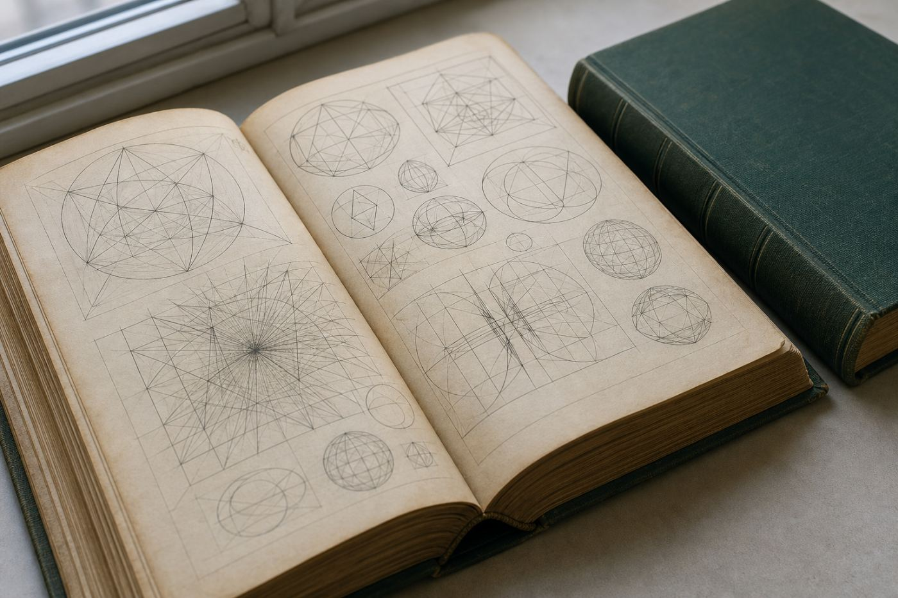

四 方 堂 書 店 の こ と
- 昭和24年
- 神田の古本街に店をオープン。
- —— 44年間
- 多くのお客様に親しまれながら、商売を続けて参りました。
- 平成 5年
- 諸事情もあり、店を閉めました。
- その後
- お客様からの根強い要望と、「良書を安価にてご提供させていただきたい」という思いで、ホームページを開設いたしました。
どうぞ、ごひいきに！！
昭和24年に神田の古本街で店をひらいて、44年。
いまは店舗を持たず、このホームページが四方堂書店です。
在庫は全文検索でお探しいただけます。タイトル、著者、発行所などの一部からでも探せます。
「日本の古本屋」でも販売しています。出品していない本も、ご依頼いただければ出品いたします。
お手持ちの蔵書を、買い取らせていただきます。
買取のご希望がございましたら、メールにてご相談ください。
naito@shi-ho-do.com
大学・企業関係で公費・経費扱いでのご注文の際は、必要な伝票とお支払い条件をお知らせください。ご指示の伝票を添えて発送いたします。当店は適格請求書発行事業者です。
どうぞ、ごひいきに！！
| ご注文 | お探しの本は全文検索から。ご注文後24時間以内に、在庫の確認と送料を含めた金額をご連絡いたします。 |
|---|---|
| 発 送 | 月・火・木・土の週4日 |
| お問合せ | naito@shi-ho-do.com |

お問合せ・蔵書買取のご相談は
naito@shi-ho-do.com
※このページは、レベルアップオペレーションズが四方堂書店様へのご提案としてお作りした見本です。四方堂書店様が公開されているページではありません。文章は四方堂書店様のホームページに書かれているものを使わせていただき、読みやすいように一部をこちらで書き足しています。掲載している写真はすべてイメージ写真で、四方堂書店様のものではありません。お手元の写真をお送りいただければ差し替えます。ご用意が難しい場合は、こうしたイメージ写真をこちらでご用意することもできます。